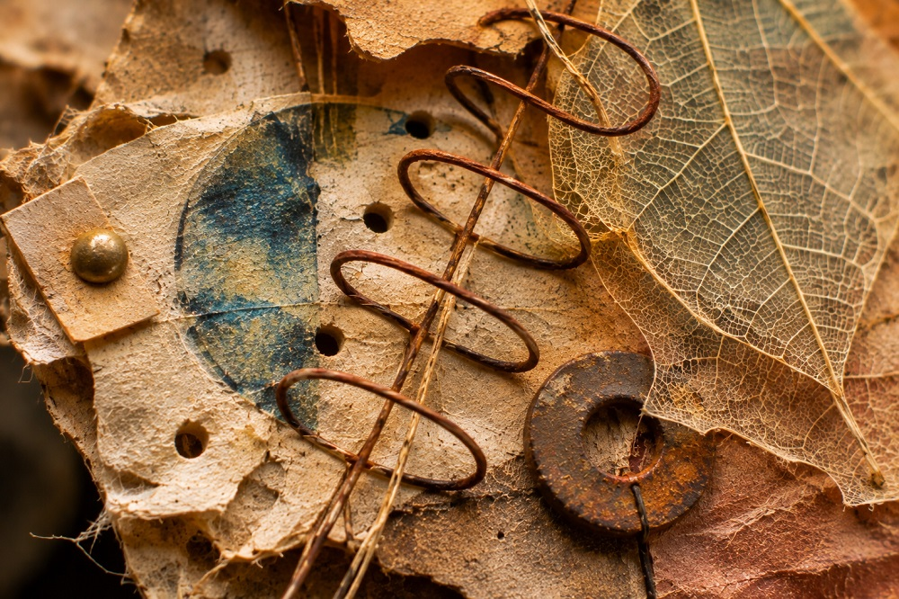

Inicio > Blog Bitácora de un bibliotecario > Conocimiento y memoria indígena (02)
Conocimiento y memoria indígena (02)
Registros indígenas sin sus historias
Procedencia, contexto y nuevas interpretaciones de las colecciones coloniales
Este post forma parte de una serie que explora las relaciones entre los sistemas de conocimiento indígenas, las bibliotecas y los archivos. Examina las historias, las prácticas, los conflictos y las responsabilidades vinculados con la documentación, preservación, organización y transmisión de los conocimientos indígenas, prestando especial atención a la autoridad cultural y a los límites de la intervención institucional. Todas las entradas de esta serie pueden consultarse en el índice de esta sección.
La fotografía equivocada
A mediados de la década de 1990 apareció una fotografía histórica en el programa del Woodford Folk Festival, en Queensland, Australia. Supuestamente mostraba una de las últimas grandes reuniones aborígenes asociadas con el tradicional Festival de Bunya, celebrado en el siglo XIX.
La imagen parecía confirmar esa identificación. Un grupo de aborígenes aparecía reunido al aire libre, aparentemente participando en un acontecimiento vinculado con la historia indígena de la región. Para quienes no conocían la fotografía, había pocos motivos para poner en duda la información que la acompañaba.
Sin embargo, la fotografía mostraba algo completamente distinto.
Había sido tomada el 12 de noviembre de 1892 en Chelmer Reach, a orillas del río Brisbane, durante un picnic organizado por el Queensland Press Club. Las personas que aparecían en ella pertenecían al Wild Australia Show, una compañía de artistas aborígenes que recorrió varias ciudades australianas a comienzos de la década de 1890.
El error no se había originado entre los organizadores del festival. La fotografía procedía de la Biblioteca Estatal de Queensland, donde había sido asociada incorrectamente con el distrito de Noosa. En algún momento de su historia, la imagen había quedado desvinculada del acontecimiento que realmente representaba.
La identificación errónea siguió circulando. La fotografía apareció en publicaciones de historia local y en investigaciones e informes relacionados con reclamos de reconocimiento de derechos territoriales indígenas, donde se utilizó como prueba de una reunión que nunca había ocurrido. La confusión pudo aclararse finalmente gracias a las investigaciones de Michael Aird, Paul Memmott y sus colaboradores. Mediante el examen de periódicos de la época, fotografías y otros documentos, lograron establecer las circunstancias en las que se había tomado la foto.
Lo interesante de este caso no es simplemente que un archivero o un investigador cometiera un error. Los errores son inevitables en el trabajo histórico. Lo importante es lo que ocurrió después.
Una descripción institucional incorrecta se convirtió en la base de interpretaciones posteriores. La fotografía adquirió una nueva identidad histórica, que los investigadores reprodujeron sin examinar las pruebas que la sustentaban.
El archivo había conservado la imagen. También había contribuido a conservar una historia inexacta de esa misma imagen.
Cuando el catálogo se convierte en prueba
Las colecciones no permanecen inalteradas después de ingresar en una biblioteca o un archivo. Se ordenan, describen, clasifican, copian, exhiben e incorporan a nuevos sistemas de acceso. Estas actividades generan información que posteriormente los investigadores utilizan para comprender los materiales.
Un catálogo puede identificar al autor de un manuscrito, el lugar donde se tomó una fotografía o el origen cultural de un objeto. Lo ideal sería que esa información se basara en fuentes históricas fiables. Sin embargo, a veces procede de una anotación incierta, de un catálogo antiguo o de una deducción realizada por alguien que tenía conocimientos limitados sobre el material. Con el tiempo, puede resultar difícil distinguir entre lo que demuestra el documento original y lo que un catalogador posterior creyó acerca de él.
Pensemos en una fotografía sin identificar que se atribuye a un lugar determinado porque el paisaje se parece al de otras imágenes de esa zona. La atribución se incorpora al catálogo. Más adelante, un historiador utiliza la fotografía en una publicación y cita la descripción institucional. Otro investigador reproduce la imagen y cita al historiador. Finalmente, varias publicaciones coinciden en la ubicación de la fotografía, aunque todas dependen de la misma conjetura inicial. La repetición ha creado la impresión de que varias fuentes independientes confirman el dato.
Este proceso tiene consecuencias especialmente importantes para los materiales indígenas, porque muchas descripciones institucionales fueron elaboradas por personas cuyo conocimiento de las sociedades que documentaban era incompleto. Los nombres, las atribuciones geográficas, las identificaciones lingüísticas y las explicaciones de determinadas prácticas podían reflejar la interpretación del coleccionista en lugar de la de las personas representadas. Algunas descripciones fueron cuidadosamente investigadas. Otras eran provisionales o estaban equivocadas. Su fiabilidad no puede darse por sentada simplemente porque figuren en un catálogo institucional.
La situación se complica cuando el contexto original ya no está disponible para contrastar la información. Una descripción institucional puede convertirse entonces en la principal fuente de información sobre un documento, aunque originalmente solo estuviera destinada a facilitar su localización e identificación.
En esas circunstancias, la historia atribuida a un documento puede sustituir gradualmente a su historia real.
Los artistas que se volvieron anónimos
El Wild Australia Show ofrece otro ejemplo de las consecuencias de esta transformación.
La compañía estaba integrada por veintisiete artistas aborígenes reclutados en el norte de Queensland. Durante 1892 y 1893, viajaron y actuaron en varias ciudades australianas, presentándose ante públicos interesados en las exhibiciones de culturas indígenas.
Ciertos fotógrafos comerciales realizaron retratos de los artistas. Algunas de esas fotografías estaban destinadas a la publicidad; otras circularon como retratos de estudio o tarjetas postales.
Estas fotografías sobrevivieron, pero muchas terminaron perdiendo sus identificaciones originales. Una imagen de cuatro artistas fue descrita como Group of Black Trackers ("Grupo de rastreadores negros"), sin mencionar que, cuando se tomó la fotografía, aquellos hombres formaban parte de una compañía profesional de artistas que se encontraba de gira.
Un retrato de Dangakura, un hombre wakaya que participó en el espectáculo, circuló bajo la etiqueta genérica An Aboriginal ("Un aborigen"). La fotografía de un hombre aborigen anónimo puede interpretarse como una representación etnográfica de una población indígena. Esa misma fotografía, identificada como un retrato de Dangakura, permite plantear otras preguntas históricas.
¿Quién era? ¿Cómo llegó a formar parte de la compañía? ¿Adónde viajó? ¿Qué trabajo realizó? ¿Cómo lo representó la fotografía comercial y qué ocurrió posteriormente con su imagen? La identificación genérica deja fuera de consideración todas esas preguntas.
Por eso fueron importantes las investigaciones de Aird y Memmott. Al relacionar las fotografías con periódicos de la época y otras fuentes, recuperaron las identidades de los artistas y reconstruyeron aspectos de sus experiencias. La investigación sirvió de base para la exposición Wild Australia, presentada en 2015 en el Museo de Antropología de la Universidad de Queensland.
También permitió que otras instituciones revisaran sus colecciones. En el Museo Macleay de la Universidad de Sídney, la conservadora Rebecca Conway identificó otras fotografías de la compañía, entre ellas imágenes de trece personas cuyos nombres pudieron recuperarse.
La investigación no se limitó a corregir algunas entradas de catálogo. También permitió comprender de otra manera lo que aquellas fotografías documentaban. Las imágenes que habían sido interpretadas principalmente como representaciones genéricas de personas aborígenes podían examinarse ahora como registros de personas concretas, sus ocupaciones, sus viajes y sus encuentros con la sociedad colonial.
El contenido de las fotografías no había cambiado. Los investigadores habían reconstruido los vínculos entre las imágenes y sus circunstancias históricas.
Esto plantea una pregunta sobre la procedencia. Una institución puede saber quién donó una fotografía, quién fue su propietario anterior y cuándo ingresó en una colección. Esa información es valiosa. Pero ¿nos dice lo suficiente sobre la fotografía en sí?
La historia de su custodia institucional y la de las personas representadas no son necesariamente la misma. Y a veces la primera se conserva mientras la segunda permanece desconocida, porque quienes produjeron o describieron la fotografía nunca consideraron necesario registrarla.
Un manuscrito maya con un pasado desconocido
La falta de información sobre la procedencia no siempre produce una identificación incorrecta. A veces genera incertidumbres que los investigadores no pueden resolver fácilmente.
El Códice Maya de México, anteriormente conocido como Códice Grolier, ofrece un ejemplo diferente.
El manuscrito apareció en México durante la década de 1960, tras un supuesto descubrimiento cuyas circunstancias nunca fueron documentadas de manera fiable. Ninguna excavación arqueológica controlada permitió establecer dónde había sido encontrado ni cómo había pasado a manos privadas.
En 1971 fue exhibido en el Grolier Club de Nueva York. Su aparición provocó una prolongada controversia académica. ¿Se trataba de un auténtico manuscrito maya prehispánico o de una falsificación moderna?
La pregunta era difícil de responder porque su estilo y contenido, bastante inusuales, no coincidían plenamente con los de los otros códices mayas conservados. La ausencia de una procedencia arqueológica fiable complicaba aún más la cuestión.
Si el manuscrito hubiera procedido de una excavación documentada, los investigadores habrían podido examinar su relación con otros objetos, con el yacimiento arqueológico y con materiales fechados de manera independiente. En cambio, gran parte de ese contexto no estaba disponible.
Algunos especialistas defendieron su autenticidad. Otros la cuestionaron. Durante las décadas siguientes, los investigadores estudiaron su composición material, sus pinturas, su contenido astronómico y su iconografía. Una importante reevaluación publicada en 2015 por Michael Coe, Mary Miller, Stephen Houston y Karl Taube respaldó su identificación como un auténtico manuscrito prehispánico.
Otras investigaciones interdisciplinarias organizadas por el Instituto Nacional de Antropología e Historia de México confirmaron su autenticidad. En 2018, las autoridades mexicanas reconocieron formalmente el manuscrito como Códice Maya de México.
Las investigaciones sitúan su producción entre los siglos XI y XII. Actualmente se lo considera el libro americano legible más antiguo que se conserva. Sin embargo, las circunstancias de su descubrimiento en el siglo XX siguen estando documentadas de manera incompleta.
La autenticidad del manuscrito pudo establecerse mediante investigaciones científicas e históricas sin necesidad de reconstruir todas las etapas de su procedencia.
La información que falta sigue siendo importante porque limita lo que puede afirmarse sobre el contexto arqueológico original del manuscrito y su circulación posterior, aunque no impide que los investigadores establezcan otros hechos.
El caso nos recuerda que la procedencia no es una pregunta única con una respuesta única. Podemos saber cuándo se creó un documento sin conocer dónde fue descubierto. Podemos reconstruir su historia institucional sin comprender cómo salió de su entorno original. Y podemos disponer de pruebas fiables sobre determinados aspectos de su historia mientras otros siguen siendo inciertos.
¿Podemos recuperar una historia perdida?
En algunas circunstancias, es posible reconstruir los vínculos que se habían perdido.
Las fotografías del Wild Australia Show pudieron identificarse porque se habían conservado periódicos de la época, otras fotografías y documentación histórica. Los investigadores pudieron comparar esas fuentes y reconocer personas y acontecimientos que las descripciones anteriores habían ocultado.
El códice maya planteaba un problema diferente. Su contexto arqueológico no pudo recuperarse, pero los análisis científicos permitieron establecer hechos importantes sobre su producción.
Otras colecciones ofrecen menos posibilidades.
Un objeto puede haber sido adquirido sin ninguna información sobre su creador. Una fotografía puede haberse tomado sin registrar los nombres de las personas retratadas. Un coleccionista puede haber documentado una adquisición sin investigar la historia anterior del material.
En algunos casos, la información existió y posteriormente se perdió; en otros, nunca llegó a registrarse. Una laguna en un catálogo institucional no significa necesariamente que el conocimiento correspondiente haya desaparecido. Los nombres, lugares y relaciones históricas pueden seguir siendo conocidos por familias o comunidades, o estar documentados en fuentes que la institución nunca ha consultado.
Tampoco podemos suponer que todos los detalles ausentes puedan recuperarse algún día. La investigación histórica debe distinguir entre lo que está establecido, lo que es probable, lo que sigue siendo objeto de controversia y lo que actualmente no puede conocerse.
Existe otra complicación. Cuando se corrige una descripción, la interpretación anterior no necesariamente pierde toda su importancia. La identificación errónea de la fotografía del Festival de Bunya forma parte de la historia posterior de esa imagen. Explica por qué circuló en determinadas publicaciones y cómo llegó a asociarse con un acontecimiento que nunca había representado. La antigua descripción ya no debería presentarse como un hecho, pero su existencia sigue teniendo importancia histórica.
Esto significa que un documento puede haber recibido distintas identificaciones a lo largo del tiempo. Algunas están respaldadas por pruebas; otras reflejan errores, suposiciones o cambios de interpretación. Reconstruir su historia implica comprender esos cambios, en lugar de limitarse a sustituir un pie de foto antiguo por otro nuevo.
La historia que creemos conocer
Los materiales conservados en bibliotecas y archivos tienen historias que van más allá de su conservación material.
Una fotografía puede ser retirada de su contexto original, recibir una descripción incorrecta, aparecer en publicaciones y terminar convirtiéndose en prueba de un acontecimiento que nunca documentó. Un retrato puede perder el nombre de la persona representada y transformarse en una ilustración etnográfica genérica. Un manuscrito puede sobrevivir durante siglos mientras sigue faltando información esencial sobre su descubrimiento o circulación.
Son problemas diferentes, pero revelan algo importante sobre las instituciones documentales. Las bibliotecas y los archivos conservan documentos que sirven como pruebas históricas. También producen información sobre ellos, y sus descripciones influyen en la manera en que las generaciones posteriores comprenden el pasado.
Los materiales históricos requieren interpretación, y buena parte de lo que sabemos sobre ellos depende de una investigación institucional cuidadosa. La dificultad surge cuando las interpretaciones adquieren la apariencia de hechos establecidos sin que se conserven las pruebas, los supuestos y las incertidumbres en los que se basaron.
En el caso de las colecciones indígenas, las consecuencias pueden ser especialmente importantes porque los registros institucionales conservados suelen privilegiar las perspectivas de coleccionistas, administradores e investigadores. Esas historias pueden estar documentadas con exactitud dentro de sus propios límites, pero no dan cuenta de las personas, los propósitos y las relaciones vinculadas con los materiales antes o fuera de su custodia institucional.
La historia conservada por una institución y la historia del material que conserva no son necesariamente la misma. Ambas pueden ser valiosas, y ambas requieren investigación. Un registro de adquisición puede documentar con exactitud una transacción y, al mismo tiempo, revelar muy poco sobre la historia anterior de un documento. Un catálogo puede reproducir fielmente una atribución antigua sin establecer si alguna vez fue correcta.
Las consecuencias se hacen visibles cuando esas descripciones circulan fuera de la institución. Los investigadores las citan, las publicaciones las reproducen y las interpretaciones históricas comienzan a depender de información cuyos orígenes tal vez ya no estén claros. La historia de las fotografías del Wild Australia Show demuestra hasta dónde puede llegar una identificación incorrecta y cuánta investigación puede ser necesaria para establecer qué representa realmente el documento original.
Conservar un documento también significa conservar las pruebas necesarias para comprenderlo. Esas pruebas incluyen la historia de las descripciones e interpretaciones que se le han atribuido a lo largo del tiempo, incluso aquellas que posteriormente resultaron equivocadas. Sin ellas, quienes investiguen esos materiales en el futuro pueden heredar no solo los documentos, sino también suposiciones sobre su pasado que han adquirido la apariencia de hechos históricos.